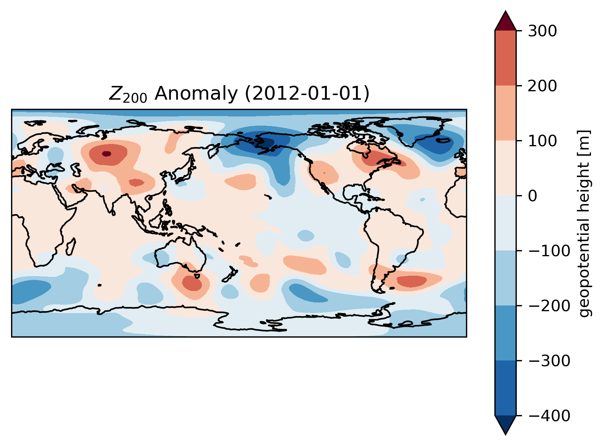
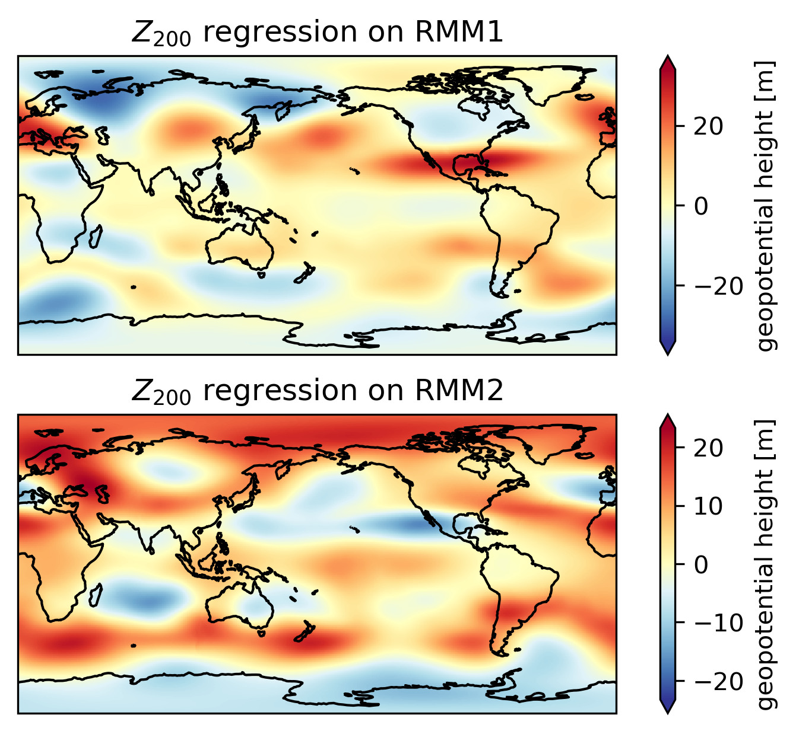
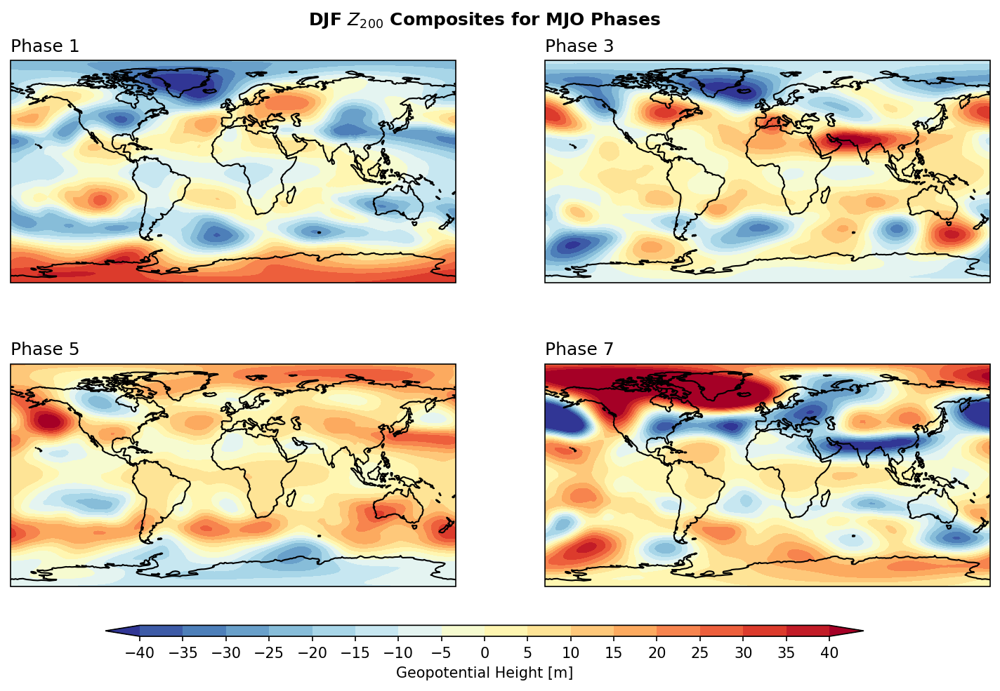

13. dask: Parallel Computations for Large Datasets#
Some people think that large datasets or “big data” are mostly applied to machine learning and artificial intelligence fields. In atmospheric science,
Big data refers to data sets that are so voluminous and complex that traditional data processing application software is inadequate to deal with them.
Due to the long periods and finer grid resolutions of modern reanalysis data or model outputs, it takes huge amount of time and consumes large RAM if reading all the data values. For example, if we read and load the whole ERA5 geopotential files in DJF 1981-2020,
hgt = xr.open_mfdataset( "/tsubaki_data/wtsai/PyAOS/era5_hgt_demo/*.nc",
combine = "nested",
concat_dim = "time",
parallel=True
).load()
hgt
The process takes 7 minutes and 21 seconds, and consumes up to 110GB of RAM on our server. What worse, if executing the above code on a server without enough RAM, it can lead to system overload. You may see the following error message:
MemoryError: Unable to allocate 52.2 GiB for an array with shape (365, 37, 721, 1440) and data type float32
This error message appears because the data size has exceeded the RAM capacity. How should we avoid this situation?
Dask Arrays#
Dask is a flexible library for parallel computing in Python. It can scale up to operate on large datasets and perform computations that cannot fit into memory. Dask achieves this by breaking down large computations into smaller tasks, which are then executed in parallel. This can avoid consuming large amount of RAM.
To understand the usage of dask, with demonstrate first with a 1000 × 4000 array size.
1. Numpy Array:
import numpy as np
shape = (1000, 4000)
ones_np = np.ones(shape)
ones_np
array([[1., 1., 1., ..., 1., 1., 1.],
[1., 1., 1., ..., 1., 1., 1.],
[1., 1., 1., ..., 1., 1., 1.],
...,
[1., 1., 1., ..., 1., 1., 1.],
[1., 1., 1., ..., 1., 1., 1.],
[1., 1., 1., ..., 1., 1., 1.]])
2. Dask Array:
import dask.array as da
ones = da.ones(shape)
ones
|
||||||||||||||||

Dask devides the entire array into sub-arrays named “chunk”. In dask, we can specify the size of a chunk.
chunk_shape = (1000, 1000)
ones = da.ones(shape, chunks=chunk_shape)
ones
|
||||||||||||||||
We can do some arithmetic calculations, such as multiplication and averaging.
ones_mean = (ones * ones[::-1, ::-1]).mean()
ones_mean
|
||||||||||||||||
Following is the calculation procedure:

Dask allows computation of each chunk in each memory core, and finally combines all the computation of each chunk to a final result. Dask integrates commonly-used functions in numpy and xarray, which is beneficial to processing climate data. Then how will dask help with large datasets? In the following sections, we will demonstrate two types of workflow that will leverage the usage of dask to elevate computation efficiency.
Dask Environment Setup#
We add the following codes before we proceed to primary computation jobs.
from dask import delayed, compute
from dask.distributed import Client, LocalCluster
cluster = LocalCluster(n_workers=8, threads_per_worker=1, memory_limit='32GB')
client = Client(cluster)
client
/data/wtsai/micromamba/p3t/lib/python3.10/site-packages/distributed/node.py:187: UserWarning: Port 8787 is already in use.
Perhaps you already have a cluster running?
Hosting the HTTP server on port 36179 instead
warnings.warn(
Client
Client-90c58107-6ac7-11f1-b824-e43d1aa7f14b
| Connection method: Cluster object | Cluster type: distributed.LocalCluster |
| Dashboard: http://127.0.0.1:36179/status |
Cluster Info
LocalCluster
271b0726
| Dashboard: http://127.0.0.1:36179/status | Workers: 8 |
| Total threads: 8 | Total memory: 238.42 GiB |
| Status: running | Using processes: True |
Scheduler Info
Scheduler
Scheduler-cb53c718-22dc-4966-a792-ad956a46a08d
| Comm: tcp://127.0.0.1:45337 | Workers: 8 |
| Dashboard: http://127.0.0.1:36179/status | Total threads: 8 |
| Started: Just now | Total memory: 238.42 GiB |
Workers
Worker: 0
| Comm: tcp://127.0.0.1:33819 | Total threads: 1 |
| Dashboard: http://127.0.0.1:40999/status | Memory: 29.80 GiB |
| Nanny: tcp://127.0.0.1:41111 | |
| Local directory: /tmp/dask-scratch-space/worker-303pyph2 | |
Worker: 1
| Comm: tcp://127.0.0.1:41513 | Total threads: 1 |
| Dashboard: http://127.0.0.1:46129/status | Memory: 29.80 GiB |
| Nanny: tcp://127.0.0.1:37317 | |
| Local directory: /tmp/dask-scratch-space/worker-bvkeqm9v | |
Worker: 2
| Comm: tcp://127.0.0.1:42263 | Total threads: 1 |
| Dashboard: http://127.0.0.1:45951/status | Memory: 29.80 GiB |
| Nanny: tcp://127.0.0.1:39761 | |
| Local directory: /tmp/dask-scratch-space/worker-sw8gvex4 | |
Worker: 3
| Comm: tcp://127.0.0.1:32893 | Total threads: 1 |
| Dashboard: http://127.0.0.1:33173/status | Memory: 29.80 GiB |
| Nanny: tcp://127.0.0.1:39519 | |
| Local directory: /tmp/dask-scratch-space/worker-9acwltc6 | |
Worker: 4
| Comm: tcp://127.0.0.1:35043 | Total threads: 1 |
| Dashboard: http://127.0.0.1:34393/status | Memory: 29.80 GiB |
| Nanny: tcp://127.0.0.1:45777 | |
| Local directory: /tmp/dask-scratch-space/worker-6pcj60wo | |
Worker: 5
| Comm: tcp://127.0.0.1:42825 | Total threads: 1 |
| Dashboard: http://127.0.0.1:42861/status | Memory: 29.80 GiB |
| Nanny: tcp://127.0.0.1:41403 | |
| Local directory: /tmp/dask-scratch-space/worker-s8mibiev | |
Worker: 6
| Comm: tcp://127.0.0.1:33877 | Total threads: 1 |
| Dashboard: http://127.0.0.1:39115/status | Memory: 29.80 GiB |
| Nanny: tcp://127.0.0.1:44229 | |
| Local directory: /tmp/dask-scratch-space/worker-_qpoob_f | |
Worker: 7
| Comm: tcp://127.0.0.1:33169 | Total threads: 1 |
| Dashboard: http://127.0.0.1:42333/status | Memory: 29.80 GiB |
| Nanny: tcp://127.0.0.1:44733 | |
| Local directory: /tmp/dask-scratch-space/worker-p7hlv9ol | |
LocalCluster: Used to start multiple workers on the local machine for parallel computationClient: Connects to the scheduler and handles communication between your Python session and the cluster. Every computation job is submitted to the workers through the client.cluster = LocalCluster(n_workers=32, threads_per_worker=1, memory_limit=0): Creates a local cluster where each worker runs on a single thread. Our server, for example, has 64 CPU (32 physical cores, you can see frombpytopon Linux) — one worker per physical core works best for numerical computations. The memory limit can be set to 0, meaning no restriction. Be cautious: if the dataset is too large or the workflow is poorly designed, this may overload the available RAM. In practice, you can set the memory limit explicitly (e.g.,"4GB","8GB","16GB") to protect your system.client = Client(cluster): Initializes a client object that communicates with the cluster. This ensures all Dask operations (e.g., loading large NetCDF/GRIB files with xarray, or delayed computations) are distributed to the workers via the scheduler.
There is also a link to the Client Dashboard. You can click to monitor your LocalCluster in real time.

Large Climate Dataset Processing#
In Unit 2, we introduced the parallel=True option in xarray.open_mfdataset. This option allows xarray to read the file using dask.
import xarray as xr
hgt = (xr.open_mfdataset( "/tsubaki_data/wtsai/PyAOS/era5_hgt_demo/*.nc", # 檔案名稱
combine = "nested",
concat_dim = "time", # 以時間維度串接資料
parallel=True # 運用dask平行運算，提高運算效率
)
.hgt) # 將資料持久化到記憶體中，避免重複計算
hgt
<xarray.DataArray 'hgt' (time: 14440, level: 2, latitude: 361, longitude: 720)> Size: 60GB
dask.array<concatenate, shape=(14440, 2, 361, 720), dtype=float64, chunksize=(1, 1, 361, 720), chunktype=numpy.ndarray>
Coordinates:
* time (time) datetime64[ns] 116kB 1981-12-01 ... 2021-02-28T18:00:00
* longitude (longitude) float32 3kB 0.0 0.5 1.0 1.5 ... 358.5 359.0 359.5
* latitude (latitude) float32 1kB 90.0 89.5 89.0 88.5 ... -89.0 -89.5 -90.0
* level (level) int32 8B 200 850
Attributes:
standard_name: geopotential_height
long_name: geopotential height
units: mAt this point, hgt is a Dask-backed DataArray, not a full in-memory NumPy array. At this point, no actual data is read into RAM yet. The DataArray only stores metadata: dimensions, coordinates, data type, chunking info. Hence, the u array is very small (only a few MB regardless of how big your NetCDF files).
Although xarray automatically chunks the dataset when using xr.open_mfdataset(), you can rechunk manually as follow:
from xarray.groupers import TimeResampler
hgt = hgt.chunk({'time': 360, 'level':1, 'latitude':361,'longitude':360})
hgt
<xarray.DataArray 'hgt' (time: 14440, level: 2, latitude: 361, longitude: 720)> Size: 60GB
dask.array<rechunk-merge, shape=(14440, 2, 361, 720), dtype=float64, chunksize=(360, 1, 361, 360), chunktype=numpy.ndarray>
Coordinates:
* time (time) datetime64[ns] 116kB 1981-12-01 ... 2021-02-28T18:00:00
* longitude (longitude) float32 3kB 0.0 0.5 1.0 1.5 ... 358.5 359.0 359.5
* latitude (latitude) float32 1kB 90.0 89.5 89.0 88.5 ... -89.0 -89.5 -90.0
* level (level) int32 8B 200 850
Attributes:
standard_name: geopotential_height
long_name: geopotential height
units: mManual rechunking is particularly useful when the dataset is very large and the automatic chunking produces too many small chunks, which can lead to high scheduling overhead in Dask.
Practical guidelines for chunk sizing:
Aim for chunk sizes roughly 50–200 MB each. This is large enough to reduce overhead but small enough to fit in RAM comfortably.
Avoid having too many chunks per dimension (e.g., hundreds or thousands), because Dask has to manage each chunk as a separate task, which can slow down the computation.
Read more details on how to choose good chunk sizes here.
.compute()#
compute() will triger the computation and exeute task graphs. The final results will be loaded into RAM. Therefore, it is a good practice to slice, subset, or reduce your datasets before calling .compute(), especially when working with large NetCDF or GRIB files, to avoid memory overload.
hgt_DayClm = hgt.groupby("time.dayofyear").mean("time")
hgt_DayClm
<xarray.DataArray 'hgt' (dayofyear: 92, level: 2, latitude: 361, longitude: 720)> Size: 383MB
dask.array<transpose, shape=(92, 2, 361, 720), dtype=float64, chunksize=(92, 1, 361, 360), chunktype=numpy.ndarray>
Coordinates:
* longitude (longitude) float32 3kB 0.0 0.5 1.0 1.5 ... 358.5 359.0 359.5
* latitude (latitude) float32 1kB 90.0 89.5 89.0 88.5 ... -89.0 -89.5 -90.0
* level (level) int32 8B 200 850
* dayofyear (dayofyear) int64 736B 1 2 3 4 5 6 7 ... 361 362 363 364 365 366
Attributes:
standard_name: geopotential_height
long_name: geopotential height
units: mThe whole array is reduced to only 364.88 MB. Now we can trigger the computation and execute task graphs and load into a DataArray.
hgt_DayClm_computed = hgt_DayClm.compute()
hgt_DayClm_computed
/data/wtsai/micromamba/p3t/lib/python3.10/site-packages/distributed/client.py:3370: UserWarning: Sending large graph of size 17.41 MiB.
This may cause some slowdown.
Consider loading the data with Dask directly
or using futures or delayed objects to embed the data into the graph without repetition.
See also https://docs.dask.org/en/stable/best-practices.html#load-data-with-dask for more information.
warnings.warn(
The whole computation time takes less than one and half minute on our server, much less than the computation time required by simply reading and loading the whole data values.
.persist()#
Every .compute() triggers the entire task graph from beginning: reading the original NetCDF/GRIB files from disk, chunking the data, performing intermediate computations, and producing the final results. If you plan to use a intermediate product multiple times, you can persist it before the following calculations. For example, we now calculate the \(Z_{200}\) anomaly:
hgtDay = hgt.coarsen(time=4,coord_func='min').mean() # Convert to daily mean
za200 = ((hgtDay.groupby("time.dayofyear") - hgt_DayClm_computed).sel(level=200)
.chunk({'time': 90, 'latitude':180,'longitude':240}))
za200 = za200.persist()
za200
/data/wtsai/micromamba/p312/lib/python3.12/site-packages/distributed/client.py:3374: UserWarning: Sending large graph of size 377.74 MiB.
This may cause some slowdown.
Consider loading the data with Dask directly
or using futures or delayed objects to embed the data into the graph without repetition.
See also https://docs.dask.org/en/stable/best-practices.html#load-data-with-dask for more information.
warnings.warn(
<xarray.DataArray 'hgt' (time: 3610, latitude: 361, longitude: 720)> Size: 8GB
dask.array<rechunk-p2p, shape=(3610, 361, 720), dtype=float64, chunksize=(90, 180, 240), chunktype=numpy.ndarray>
Coordinates:
* time (time) datetime64[ns] 29kB 1981-12-01 1981-12-02 ... 2021-02-28
* latitude (latitude) float32 1kB 90.0 89.5 89.0 88.5 ... -89.0 -89.5 -90.0
* longitude (longitude) float32 3kB 0.0 0.5 1.0 1.5 ... 358.5 359.0 359.5
level int32 4B 200
dayofyear (time) int64 29kB dask.array<chunksize=(90,), meta=np.ndarray>
Attributes:
standard_name: geopotential_height
long_name: geopotential height
units: mThe .persist() triggers computation of parts of the task graph and stores the resulting chunks in the workers’ memory (RAM), rather than returning them to the main Python session. We see that za200 remains a dask array, but the dask graph has been reduced to 1. Subsequent computations that depend on the persisted data will directly use the in-memory chunks, avoiding repeated reading and intermediate computations.
Caution
Only persist the intermediate data whose size fits within the workers’ total memory.
Finally, we choose a day to plot the anomaly map. Note that the plot function will automatically triger computation without .compute().
import matplotlib as mpl
from matplotlib import pyplot as plt
from cartopy import crs as ccrs
mpl.rcParams['figure.dpi'] = 300
fig, ax = plt.subplots(1,1,
subplot_kw=dict(projection=ccrs.PlateCarree(central_longitude=180)))
za200.sel(time='2012-01-01').plot.contourf(x='longitude', y='latitude',
ax=ax, transform=ccrs.PlateCarree(), cmap='RdBu_r', extend='both')
ax.coastlines()
ax.set_title(r'$Z_{200}$ Anomaly (2012-01-01)')
Text(0.5, 1.0, '$Z_{200}$ Anomaly (2012-01-01)')

Example 1: Plot the \(Z_{200}\) regression maps on to RMM1 and RMM2.
Step 1: Read MJO data from the IRI data library.
import pandas as pd
# Read MJO data
mjo_ds = xr.open_dataset('http://iridl.ldeo.columbia.edu/SOURCES/.BoM/.MJO/.RMM/dods',
engine='netcdf4',
decode_times=False).rename({'T':'time'})
T = mjo_ds.time.values
mjo_ds['time'] = pd.date_range("1974-06-01", periods=len(T)) # The begining date of the RMM index is 1974-06-01
mjo_ds = mjo_ds.sel(time=za200.time).chunk({'time': 360}) # Align the time dimension of mjo_ds with za200
mjo_ds
syntax error, unexpected WORD_WORD, expecting ';' or ','
context: Attributes { T { String standard_name "time"; Float32 pointwidth 1.0; String calendar "standard"; Int32 expires 1781654400; Int32 gridtype 0; String units "julian_day"; } amplitude { Int32 expires 1781654400; String units "unitless"; Float32 missing_value 9.99999962E35; } phase { Int32 expires 1781654400; String units "unitless"; Float32 missing_value 999.0; } RMM1 { Int32 expires 1781654400; String units "unitless"; Float32 missing_value 9.99999962E35; } RMM2 { Int32 expires 1781654400; String units "unitless"; Float32 missing_value 9.99999962E35; }NC_GLOBAL { URL Wheeler and Hendon^ (2004) Monthly Weather Review article "http://journals.ametsoc.org/doi/abs/10.1175/1520-0493(2004)132%3C1917:AARMMI%3E2.0.CO;2"; String description "Real-time Multivariate MJO Index (with components of interannual variability removed)"; URL summary from BoM "http://www.bom.gov.au/climate/mjo/"; URL data source "http://www.bom.gov.au/climate/mjo/graphics/rmm.74toRealtime.txt"; String Conventions "IRIDL"; String references "Wheeler_Hendon2004"; Int32 expires 1781654400;}}
Illegal attribute
context: Attributes { T { String standard_name "time"; Float32 pointwidth 1.0; String calendar "standard"; Int32 expires 1781654400; Int32 gridtype 0; String units "julian_day"; } amplitude { Int32 expires 1781654400; String units "unitless"; Float32 missing_value 9.99999962E35; } phase { Int32 expires 1781654400; String units "unitless"; Float32 missing_value 999.0; } RMM1 { Int32 expires 1781654400; String units "unitless"; Float32 missing_value 9.99999962E35; } RMM2 { Int32 expires 1781654400; String units "unitless"; Float32 missing_value 9.99999962E35; }NC_GLOBAL { URL Wheeler and Hendon^ (2004) Monthly Weather Review article "http://journals.ametsoc.org/doi/abs/10.1175/1520-0493(2004)132%3C1917:AARMMI%3E2.0.CO;2"; String description "Real-time Multivariate MJO Index (with components of interannual variability removed)"; URL summary from BoM "http://www.bom.gov.au/climate/mjo/"; URL data source "http://www.bom.gov.au/climate/mjo/graphics/rmm.74toRealtime.txt"; String Conventions "IRIDL"; String references "Wheeler_Hendon2004"; Int32 expires 1781654400;}}
<xarray.Dataset> Size: 116kB
Dimensions: (time: 3610)
Coordinates:
* time (time) datetime64[ns] 29kB 1981-12-01 1981-12-02 ... 2021-02-28
level int32 4B 200
dayofyear (time) int64 29kB dask.array<chunksize=(360,), meta=np.ndarray>
Data variables:
amplitude (time) float32 14kB dask.array<chunksize=(360,), meta=np.ndarray>
phase (time) float32 14kB dask.array<chunksize=(360,), meta=np.ndarray>
RMM1 (time) float32 14kB dask.array<chunksize=(360,), meta=np.ndarray>
RMM2 (time) float32 14kB dask.array<chunksize=(360,), meta=np.ndarray>Step 2: Calculate the regression coefficient \(\mathbf{A}\) using the following equation:
where \(Y\) is predictand data (in this case, RMM index), and \(X\) is predictor matrix (in this case, za).
z_rmm1_slope = xr.cov(za200, mjo_ds.RMM1, dim='time') / xr.cov(mjo_ds.RMM1, mjo_ds.RMM1, dim='time')
z_rmm2_slope = xr.cov(za200, mjo_ds.RMM2, dim='time') / xr.cov(mjo_ds.RMM2, mjo_ds.RMM2, dim='time')
fig, ax = plt.subplots(2,1,
subplot_kw=dict(projection=ccrs.PlateCarree(central_longitude=180)))
z_rmm1_slope.plot(x='longitude', y='latitude', ax=ax[0], cmap='RdYlBu_r', extend='both')
z_rmm2_slope.plot(x='longitude', y='latitude', ax=ax[1], cmap='RdYlBu_r', extend='both')
for i in range(2):
ax[i].coastlines()
ax[i].set_title(r'$Z_{200}$ regression on '+ f'RMM{i+1}')
syntax error, unexpected WORD_WORD, expecting ';' or ','
context: Attributes { T { String standard_name "time"; Float32 pointwidth 1.0; String calendar "standard"; Int32 expires 1781654400; Int32 gridtype 0; String units "julian_day"; } amplitude { Int32 expires 1781654400; String units "unitless"; Float32 missing_value 9.99999962E35; } phase { Int32 expires 1781654400; String units "unitless"; Float32 missing_value 999.0; } RMM1 { Int32 expires 1781654400; String units "unitless"; Float32 missing_value 9.99999962E35; } RMM2 { Int32 expires 1781654400; String units "unitless"; Float32 missing_value 9.99999962E35; }NC_GLOBAL { URL Wheeler and Hendon^ (2004) Monthly Weather Review article "http://journals.ametsoc.org/doi/abs/10.1175/1520-0493(2004)132%3C1917:AARMMI%3E2.0.CO;2"; String description "Real-time Multivariate MJO Index (with components of interannual variability removed)"; URL summary from BoM "http://www.bom.gov.au/climate/mjo/"; URL data source "http://www.bom.gov.au/climate/mjo/graphics/rmm.74toRealtime.txt"; String Conventions "IRIDL"; String references "Wheeler_Hendon2004"; Int32 expires 1781654400;}}
Illegal attribute
context: Attributes { T { String standard_name "time"; Float32 pointwidth 1.0; String calendar "standard"; Int32 expires 1781654400; Int32 gridtype 0; String units "julian_day"; } amplitude { Int32 expires 1781654400; String units "unitless"; Float32 missing_value 9.99999962E35; } phase { Int32 expires 1781654400; String units "unitless"; Float32 missing_value 999.0; } RMM1 { Int32 expires 1781654400; String units "unitless"; Float32 missing_value 9.99999962E35; } RMM2 { Int32 expires 1781654400; String units "unitless"; Float32 missing_value 9.99999962E35; }NC_GLOBAL { URL Wheeler and Hendon^ (2004) Monthly Weather Review article "http://journals.ametsoc.org/doi/abs/10.1175/1520-0493(2004)132%3C1917:AARMMI%3E2.0.CO;2"; String description "Real-time Multivariate MJO Index (with components of interannual variability removed)"; URL summary from BoM "http://www.bom.gov.au/climate/mjo/"; URL data source "http://www.bom.gov.au/climate/mjo/graphics/rmm.74toRealtime.txt"; String Conventions "IRIDL"; String references "Wheeler_Hendon2004"; Int32 expires 1781654400;}}
syntax error, unexpected WORD_WORD, expecting ';' or ','
context: Attributes { T { String standard_name "time"; Float32 pointwidth 1.0; String calendar "standard"; Int32 expires 1781654400; Int32 gridtype 0; String units "julian_day"; } amplitude { Int32 expires 1781654400; String units "unitless"; Float32 missing_value 9.99999962E35; } phase { Int32 expires 1781654400; String units "unitless"; Float32 missing_value 999.0; } RMM1 { Int32 expires 1781654400; String units "unitless"; Float32 missing_value 9.99999962E35; } RMM2 { Int32 expires 1781654400; String units "unitless"; Float32 missing_value 9.99999962E35; }NC_GLOBAL { URL Wheeler and Hendon^ (2004) Monthly Weather Review article "http://journals.ametsoc.org/doi/abs/10.1175/1520-0493(2004)132%3C1917:AARMMI%3E2.0.CO;2"; String description "Real-time Multivariate MJO Index (with components of interannual variability removed)"; URL summary from BoM "http://www.bom.gov.au/climate/mjo/"; URL data source "http://www.bom.gov.au/climate/mjo/graphics/rmm.74toRealtime.txt"; String Conventions "IRIDL"; String references "Wheeler_Hendon2004"; Int32 expires 1781654400;}}
Illegal attribute
context: Attributes { T { String standard_name "time"; Float32 pointwidth 1.0; String calendar "standard"; Int32 expires 1781654400; Int32 gridtype 0; String units "julian_day"; } amplitude { Int32 expires 1781654400; String units "unitless"; Float32 missing_value 9.99999962E35; } phase { Int32 expires 1781654400; String units "unitless"; Float32 missing_value 999.0; } RMM1 { Int32 expires 1781654400; String units "unitless"; Float32 missing_value 9.99999962E35; } RMM2 { Int32 expires 1781654400; String units "unitless"; Float32 missing_value 9.99999962E35; }NC_GLOBAL { URL Wheeler and Hendon^ (2004) Monthly Weather Review article "http://journals.ametsoc.org/doi/abs/10.1175/1520-0493(2004)132%3C1917:AARMMI%3E2.0.CO;2"; String description "Real-time Multivariate MJO Index (with components of interannual variability removed)"; URL summary from BoM "http://www.bom.gov.au/climate/mjo/"; URL data source "http://www.bom.gov.au/climate/mjo/graphics/rmm.74toRealtime.txt"; String Conventions "IRIDL"; String references "Wheeler_Hendon2004"; Int32 expires 1781654400;}}
syntax error, unexpected WORD_WORD, expecting ';' or ','
context: Attributes { T { String standard_name "time"; Float32 pointwidth 1.0; String calendar "standard"; Int32 expires 1781654400; Int32 gridtype 0; String units "julian_day"; } amplitude { Int32 expires 1781654400; String units "unitless"; Float32 missing_value 9.99999962E35; } phase { Int32 expires 1781654400; String units "unitless"; Float32 missing_value 999.0; } RMM1 { Int32 expires 1781654400; String units "unitless"; Float32 missing_value 9.99999962E35; } RMM2 { Int32 expires 1781654400; String units "unitless"; Float32 missing_value 9.99999962E35; }NC_GLOBAL { URL Wheeler and Hendon^ (2004) Monthly Weather Review article "http://journals.ametsoc.org/doi/abs/10.1175/1520-0493(2004)132%3C1917:AARMMI%3E2.0.CO;2"; String description "Real-time Multivariate MJO Index (with components of interannual variability removed)"; URL summary from BoM "http://www.bom.gov.au/climate/mjo/"; URL data source "http://www.bom.gov.au/climate/mjo/graphics/rmm.74toRealtime.txt"; String Conventions "IRIDL"; String references "Wheeler_Hendon2004"; Int32 expires 1781654400;}}
Illegal attribute
context: Attributes { T { String standard_name "time"; Float32 pointwidth 1.0; String calendar "standard"; Int32 expires 1781654400; Int32 gridtype 0; String units "julian_day"; } amplitude { Int32 expires 1781654400; String units "unitless"; Float32 missing_value 9.99999962E35; } phase { Int32 expires 1781654400; String units "unitless"; Float32 missing_value 999.0; } RMM1 { Int32 expires 1781654400; String units "unitless"; Float32 missing_value 9.99999962E35; } RMM2 { Int32 expires 1781654400; String units "unitless"; Float32 missing_value 9.99999962E35; }NC_GLOBAL { URL Wheeler and Hendon^ (2004) Monthly Weather Review article "http://journals.ametsoc.org/doi/abs/10.1175/1520-0493(2004)132%3C1917:AARMMI%3E2.0.CO;2"; String description "Real-time Multivariate MJO Index (with components of interannual variability removed)"; URL summary from BoM "http://www.bom.gov.au/climate/mjo/"; URL data source "http://www.bom.gov.au/climate/mjo/graphics/rmm.74toRealtime.txt"; String Conventions "IRIDL"; String references "Wheeler_Hendon2004"; Int32 expires 1781654400;}}
syntax error, unexpected WORD_WORD, expecting ';' or ','
context: Attributes { T { String standard_name "time"; Float32 pointwidth 1.0; String calendar "standard"; Int32 expires 1781654400; Int32 gridtype 0; String units "julian_day"; } amplitude { Int32 expires 1781654400; String units "unitless"; Float32 missing_value 9.99999962E35; } phase { Int32 expires 1781654400; String units "unitless"; Float32 missing_value 999.0; } RMM1 { Int32 expires 1781654400; String units "unitless"; Float32 missing_value 9.99999962E35; } RMM2 { Int32 expires 1781654400; String units "unitless"; Float32 missing_value 9.99999962E35; }NC_GLOBAL { URL Wheeler and Hendon^ (2004) Monthly Weather Review article "http://journals.ametsoc.org/doi/abs/10.1175/1520-0493(2004)132%3C1917:AARMMI%3E2.0.CO;2"; String description "Real-time Multivariate MJO Index (with components of interannual variability removed)"; URL summary from BoM "http://www.bom.gov.au/climate/mjo/"; URL data source "http://www.bom.gov.au/climate/mjo/graphics/rmm.74toRealtime.txt"; String Conventions "IRIDL"; String references "Wheeler_Hendon2004"; Int32 expires 1781654400;}}
Illegal attribute
context: Attributes { T { String standard_name "time"; Float32 pointwidth 1.0; String calendar "standard"; Int32 expires 1781654400; Int32 gridtype 0; String units "julian_day"; } amplitude { Int32 expires 1781654400; String units "unitless"; Float32 missing_value 9.99999962E35; } phase { Int32 expires 1781654400; String units "unitless"; Float32 missing_value 999.0; } RMM1 { Int32 expires 1781654400; String units "unitless"; Float32 missing_value 9.99999962E35; } RMM2 { Int32 expires 1781654400; String units "unitless"; Float32 missing_value 9.99999962E35; }NC_GLOBAL { URL Wheeler and Hendon^ (2004) Monthly Weather Review article "http://journals.ametsoc.org/doi/abs/10.1175/1520-0493(2004)132%3C1917:AARMMI%3E2.0.CO;2"; String description "Real-time Multivariate MJO Index (with components of interannual variability removed)"; URL summary from BoM "http://www.bom.gov.au/climate/mjo/"; URL data source "http://www.bom.gov.au/climate/mjo/graphics/rmm.74toRealtime.txt"; String Conventions "IRIDL"; String references "Wheeler_Hendon2004"; Int32 expires 1781654400;}}
syntax error, unexpected WORD_WORD, expecting ';' or ','
syntax error, unexpected WORD_WORD, expecting ';' or ','
context: Attributes { T { String standard_name "time"; Float32 pointwidth 1.0; String calendar "standard"; Int32 expires 1781654400; Int32 gridtype 0; String units "julian_day"; } amplitude { Int32 expires 1781654400; String units "unitless"; Float32 missing_value 9.99999962E35; } phase { Int32 expires 1781654400; String units "unitless"; Float32 missing_value 999.0; } RMM1 { Int32 expires 1781654400; String units "unitless"; Float32 missing_value 9.99999962E35; } RMM2 { Int32 expires 1781654400; String units "unitless"; Float32 missing_value 9.99999962E35; }NC_GLOBAL { URL Wheeler and Hendon^ (2004) Monthly Weather Review article "http://journals.ametsoc.org/doi/abs/10.1175/1520-0493(2004)132%3C1917:AARMMI%3E2.0.CO;2"; String description "Real-time Multivariate MJO Index (with components of interannual variability removed)"; URL summary from BoM "http://www.bom.gov.au/climate/mjo/"; URL data source "http://www.bom.gov.au/climate/mjo/graphics/rmm.74toRealtime.txt"; String Conventions "IRIDL"; String references "Wheeler_Hendon2004"; Int32 expires 1781654400;}}
Illegal attribute
context: Attributes { T { String standard_name "time"; Float32 pointwidth 1.0; String calendar "standard"; Int32 expires 1781654400; Int32 gridtype 0; String units "julian_day"; } amplitude { Int32 expires 1781654400; String units "unitless"; Float32 missing_value 9.99999962E35; } phase { Int32 expires 1781654400; String units "unitless"; Float32 missing_value 999.0; } RMM1 { Int32 expires 1781654400; String units "unitless"; Float32 missing_value 9.99999962E35; } RMM2 { Int32 expires 1781654400; String units "unitless"; Float32 missing_value 9.99999962E35; }NC_GLOBAL { URL Wheeler and Hendoncontext: Attributes { T { String standard_name "time"; Float32 pointwidth 1.0; String calendar "standard"; Int32 expires 1781654400; Int32 gridtype 0; String units "julian_day"; } amplitude { Int32 expires 1781654400; String units "unitless"; Float32 missing_value 9.99999962E35; } phase { Int32 expires 1781654400; String units "unitless"; Float32 missing_value 999.0; } RMM1 { Int32 expires 1781654400; String units "unitless"; Float32 missing_value 9.99999962E35; } RMM2 { Int32 expires 1781654400; String units "unitless"; Float32 missing_value 9.99999962E35; }NC_GLOBAL { URL Wheeler and Hendon^ (2004) Monthly Weather Review article "http://journals.ametsoc.org/doi/abs/10.1175/1520-0493(2004)132%3C1917:AARMMI%3E2.0.CO;2"; String description "Real-time Multivariate MJO Index (with components of interannual variability removed)"; URL summary from BoM "http://www.bom.gov.au/climate/mjo/"; URL data source "http://www.bom.gov.au/climate/mjo/graphics/rmm.74toRealtime.txt"; String Conventions "IRIDL"; String references "Wheeler_Hendon2004"; Int32 expires 1781654400;}}
^ (2004) Monthly Weather Review article "http://journals.ametsoc.org/doi/abs/10.1175/1520-0493(2004)132%3C1917:AARMMI%3E2.0.CO;2"; String description "Real-time Multivariate MJO Index (with components of interannual variability removed)"; URL summary from BoM "http://www.bom.gov.au/climate/mjo/"; URL data source "http://www.bom.gov.au/climate/mjo/graphics/rmm.74toRealtime.txt"; String Conventions "IRIDL"; String references "Wheeler_Hendon2004"; Int32 expires 1781654400;}}
Illegal attribute
context: Attributes { T { String standard_name "time"; Float32 pointwidth 1.0; String calendar "standard"; Int32 expires 1781654400; Int32 gridtype 0; String units "julian_day"; } amplitude { Int32 expires 1781654400; String units "unitless"; Float32 missing_value 9.99999962E35; } phase { Int32 expires 1781654400; String units "unitless"; Float32 missing_value 999.0; } RMM1 { Int32 expires 1781654400; String units "unitless"; Float32 missing_value 9.99999962E35; } RMM2 { Int32 expires 1781654400; String units "unitless"; Float32 missing_value 9.99999962E35; }NC_GLOBAL { URL Wheeler and Hendon^ (2004) Monthly Weather Review article "http://journals.ametsoc.org/doi/abs/10.1175/1520-0493(2004)132%3C1917:AARMMI%3E2.0.CO;2"; String description "Real-time Multivariate MJO Index (with components of interannual variability removed)"; URL summary from BoM "http://www.bom.gov.au/climate/mjo/"; URL data source "http://www.bom.gov.au/climate/mjo/graphics/rmm.74toRealtime.txt"; String Conventions "IRIDL"; String references "Wheeler_Hendon2004"; Int32 expires 1781654400;}}
syntax error, unexpected WORD_WORD, expecting ';' or ','
context: Attributes { T { String standard_name "time"; Float32 pointwidth 1.0; String calendar "standard"; Int32 expires 1781654400; Int32 gridtype 0; String units "julian_day"; } amplitude { Int32 expires 1781654400; String units "unitless"; Float32 missing_value 9.99999962E35; } phase { Int32 expires 1781654400; String units "unitless"; Float32 missing_value 999.0; } RMM1 { Int32 expires 1781654400; String units "unitless"; Float32 missing_value 9.99999962E35; } RMM2 { Int32 expires 1781654400; String units "unitless"; Float32 missing_value 9.99999962E35; }NC_GLOBAL { URL Wheeler and Hendon^ (2004) Monthly Weather Review article "http://journals.ametsoc.org/doi/abs/10.1175/1520-0493(2004)132%3C1917:AARMMI%3E2.0.CO;2"; String description "Real-time Multivariate MJO Index (with components of interannual variability removed)"; URL summary from BoM "http://www.bom.gov.au/climate/mjo/"; URL data source "http://www.bom.gov.au/climate/mjo/graphics/rmm.74toRealtime.txt"; String Conventions "IRIDL"; String references "Wheeler_Hendon2004"; Int32 expires 1781654400;}}
Illegal attribute
context: Attributes { T { String standard_name "time"; Float32 pointwidth 1.0; String calendar "standard"; Int32 expires 1781654400; Int32 gridtype 0; String units "julian_day"; } amplitude { Int32 expires 1781654400; String units "unitless"; Float32 missing_value 9.99999962E35; } phase { Int32 expires 1781654400; String units "unitless"; Float32 missing_value 999.0; } RMM1 { Int32 expires 1781654400; String units "unitless"; Float32 missing_value 9.99999962E35; } RMM2 { Int32 expires 1781654400; String units "unitless"; Float32 missing_value 9.99999962E35; }NC_GLOBAL { URL Wheeler and Hendon^ (2004) Monthly Weather Review article "http://journals.ametsoc.org/doi/abs/10.1175/1520-0493(2004)132%3C1917:AARMMI%3E2.0.CO;2"; String description "Real-time Multivariate MJO Index (with components of interannual variability removed)"; URL summary from BoM "http://www.bom.gov.au/climate/mjo/"; URL data source "http://www.bom.gov.au/climate/mjo/graphics/rmm.74toRealtime.txt"; String Conventions "IRIDL"; String references "Wheeler_Hendon2004"; Int32 expires 1781654400;}}
syntax error, unexpected WORD_WORD, expecting ';' or ','
context: Attributes { T { String standard_name "time"; Float32 pointwidth 1.0; String calendar "standard"; Int32 expires 1781654400; Int32 gridtype 0; String units "julian_day"; } amplitude { Int32 expires 1781654400; String units "unitless"; Float32 missing_value 9.99999962E35; } phase { Int32 expires 1781654400; String units "unitless"; Float32 missing_value 999.0; } RMM1 { Int32 expires 1781654400; String units "unitless"; Float32 missing_value 9.99999962E35; } RMM2 { Int32 expires 1781654400; String units "unitless"; Float32 missing_value 9.99999962E35; }NC_GLOBAL { URL Wheeler and Hendon^ (2004) Monthly Weather Review article "http://journals.ametsoc.org/doi/abs/10.1175/1520-0493(2004)132%3C1917:AARMMI%3E2.0.CO;2"; String description "Real-time Multivariate MJO Index (with components of interannual variability removed)"; URL summary from BoM "http://www.bom.gov.au/climate/mjo/"; URL data source "http://www.bom.gov.au/climate/mjo/graphics/rmm.74toRealtime.txt"; String Conventions "IRIDL"; String references "Wheeler_Hendon2004"; Int32 expires 1781654400;}}
Illegal attribute
context: Attributes { T { String standard_name "time"; Float32 pointwidth 1.0; String calendar "standard"; Int32 expires 1781654400; Int32 gridtype 0; String units "julian_day"; } amplitude { Int32 expires 1781654400; String units "unitless"; Float32 missing_value 9.99999962E35; } phase { Int32 expires 1781654400; String units "unitless"; Float32 missing_value 999.0; } RMM1 { Int32 expires 1781654400; String units "unitless"; Float32 missing_value 9.99999962E35; } RMM2 { Int32 expires 1781654400; String units "unitless"; Float32 missing_value 9.99999962E35; }NC_GLOBAL { URL Wheeler and Hendon^ (2004) Monthly Weather Review article "http://journals.ametsoc.org/doi/abs/10.1175/1520-0493(2004)132%3C1917:AARMMI%3E2.0.CO;2"; String description "Real-time Multivariate MJO Index (with components of interannual variability removed)"; URL summary from BoM "http://www.bom.gov.au/climate/mjo/"; URL data source "http://www.bom.gov.au/climate/mjo/graphics/rmm.74toRealtime.txt"; String Conventions "IRIDL"; String references "Wheeler_Hendon2004"; Int32 expires 1781654400;}}
syntax error, unexpected WORD_WORD, expecting ';' or ','
context: Attributes { T { String standard_name "time"; Float32 pointwidth 1.0; String calendar "standard"; Int32 expires 1781654400; Int32 gridtype 0; String units "julian_day"; } amplitude { Int32 expires 1781654400; String units "unitless"; Float32 missing_value 9.99999962E35; } phase { Int32 expires 1781654400; String units "unitless"; Float32 missing_value 999.0; } RMM1 { Int32 expires 1781654400; String units "unitless"; Float32 missing_value 9.99999962E35; } RMM2 { Int32 expires 1781654400; String units "unitless"; Float32 missing_value 9.99999962E35; }NC_GLOBAL { URL Wheeler and Hendon^ (2004) Monthly Weather Review article "http://journals.ametsoc.org/doi/abs/10.1175/1520-0493(2004)132%3C1917:AARMMI%3E2.0.CO;2"; String description "Real-time Multivariate MJO Index (with components of interannual variability removed)"; URL summary from BoM "http://www.bom.gov.au/climate/mjo/"; URL data source "http://www.bom.gov.au/climate/mjo/graphics/rmm.74toRealtime.txt"; String Conventions "IRIDL"; String references "Wheeler_Hendon2004"; Int32 expires 1781654400;}}
Illegal attribute
context: Attributes { T { String standard_name "time"; Float32 pointwidth 1.0; String calendar "standard"; Int32 expires 1781654400; Int32 gridtype 0; String units "julian_day"; } amplitude { Int32 expires 1781654400; String units "unitless"; Float32 missing_value 9.99999962E35; } phase { Int32 expires 1781654400; String units "unitless"; Float32 missing_value 999.0; } RMM1 { Int32 expires 1781654400; String units "unitless"; Float32 missing_value 9.99999962E35; } RMM2 { Int32 expires 1781654400; String units "unitless"; Float32 missing_value 9.99999962E35; }NC_GLOBAL { URL Wheeler and Hendon^ (2004) Monthly Weather Review article "http://journals.ametsoc.org/doi/abs/10.1175/1520-0493(2004)132%3C1917:AARMMI%3E2.0.CO;2"; String description "Real-time Multivariate MJO Index (with components of interannual variability removed)"; URL summary from BoM "http://www.bom.gov.au/climate/mjo/"; URL data source "http://www.bom.gov.au/climate/mjo/graphics/rmm.74toRealtime.txt"; String Conventions "IRIDL"; String references "Wheeler_Hendon2004"; Int32 expires 1781654400;}}
syntax error, unexpected WORD_WORD, expecting ';' or ','
context: Attributes { T { String standard_name "time"; Float32 pointwidth 1.0; String calendar "standard"; Int32 expires 1781654400; Int32 gridtype 0; String units "julian_day"; } amplitude { Int32 expires 1781654400; String units "unitless"; Float32 missing_value 9.99999962E35; } phase { Int32 expires 1781654400; String units "unitless"; Float32 missing_value 999.0; } RMM1 { Int32 expires 1781654400; String units "unitless"; Float32 missing_value 9.99999962E35; } RMM2 { Int32 expires 1781654400; String units "unitless"; Float32 missing_value 9.99999962E35; }NC_GLOBAL { URL Wheeler and Hendon^ (2004) Monthly Weather Review article "http://journals.ametsoc.org/doi/abs/10.1175/1520-0493(2004)132%3C1917:AARMMI%3E2.0.CO;2"; String description "Real-time Multivariate MJO Index (with components of interannual variability removed)"; URL summary from BoM "http://www.bom.gov.au/climate/mjo/"; URL data source "http://www.bom.gov.au/climate/mjo/graphics/rmm.74toRealtime.txt"; String Conventions "IRIDL"; String references "Wheeler_Hendon2004"; Int32 expires 1781654400;}}
Illegal attribute
context: Attributes { T { String standard_name "time"; Float32 pointwidth 1.0; String calendar "standard"; Int32 expires 1781654400; Int32 gridtype 0; String units "julian_day"; } amplitude { Int32 expires 1781654400; String units "unitless"; Float32 missing_value 9.99999962E35; } phase { Int32 expires 1781654400; String units "unitless"; Float32 missing_value 999.0; } RMM1 { Int32 expires 1781654400; String units "unitless"; Float32 missing_value 9.99999962E35; } RMM2 { Int32 expires 1781654400; String units "unitless"; Float32 missing_value 9.99999962E35; }NC_GLOBAL { URL Wheeler and Hendon^ (2004) Monthly Weather Review article "http://journals.ametsoc.org/doi/abs/10.1175/1520-0493(2004)132%3C1917:AARMMI%3E2.0.CO;2"; String description "Real-time Multivariate MJO Index (with components of interannual variability removed)"; URL summary from BoM "http://www.bom.gov.au/climate/mjo/"; URL data source "http://www.bom.gov.au/climate/mjo/graphics/rmm.74toRealtime.txt"; String Conventions "IRIDL"; String references "Wheeler_Hendon2004"; Int32 expires 1781654400;}}
syntax error, unexpected WORD_WORD, expecting ';' or ','
context: Attributes { T { String standard_name "time"; Float32 pointwidth 1.0; String calendar "standard"; Int32 expires 1781654400; Int32 gridtype 0; String units "julian_day"; } amplitude { Int32 expires 1781654400; String units "unitless"; Float32 missing_value 9.99999962E35; } phase { Int32 expires 1781654400; String units "unitless"; Float32 missing_value 999.0; } RMM1 { Int32 expires 1781654400; String units "unitless"; Float32 missing_value 9.99999962E35; } RMM2 { Int32 expires 1781654400; String units "unitless"; Float32 missing_value 9.99999962E35; }NC_GLOBAL { URL Wheeler and Hendon^ (2004) Monthly Weather Review article "http://journals.ametsoc.org/doi/abs/10.1175/1520-0493(2004)132%3C1917:AARMMI%3E2.0.CO;2"; String description "Real-time Multivariate MJO Index (with components of interannual variability removed)"; URL summary from BoM "http://www.bom.gov.au/climate/mjo/"; URL data source "http://www.bom.gov.au/climate/mjo/graphics/rmm.74toRealtime.txt"; String Conventions "IRIDL"; String references "Wheeler_Hendon2004"; Int32 expires 1781654400;}}
Illegal attribute
context: Attributes { T { String standard_name "time"; Float32 pointwidth 1.0; String calendar "standard"; Int32 expires 1781654400; Int32 gridtype 0; String units "julian_day"; } amplitude { Int32 expires 1781654400; String units "unitless"; Float32 missing_value 9.99999962E35; } phase { Int32 expires 1781654400; String units "unitless"; Float32 missing_value 999.0; } RMM1 { Int32 expires 1781654400; String units "unitless"; Float32 missing_value 9.99999962E35; } RMM2 { Int32 expires 1781654400; String units "unitless"; Float32 missing_value 9.99999962E35; }NC_GLOBAL { URL Wheeler and Hendon^ (2004) Monthly Weather Review article "http://journals.ametsoc.org/doi/abs/10.1175/1520-0493(2004)132%3C1917:AARMMI%3E2.0.CO;2"; String description "Real-time Multivariate MJO Index (with components of interannual variability removed)"; URL summary from BoM "http://www.bom.gov.au/climate/mjo/"; URL data source "http://www.bom.gov.au/climate/mjo/graphics/rmm.74toRealtime.txt"; String Conventions "IRIDL"; String references "Wheeler_Hendon2004"; Int32 expires 1781654400;}}
syntax error, unexpected WORD_WORD, expecting ';' or ','syntax error, unexpected WORD_WORD, expecting ';' or ','
syntax error, unexpected WORD_WORD, expecting ';' or ','
context: Attributes { T { String standard_name "time"; Float32 pointwidth 1.0; String calendar "standard"; Int32 expires 1781654400; Int32 gridtype 0; String units "julian_day"; } amplitude { Int32 expires 1781654400; String units "unitless"; Float32 missing_value 9.99999962E35; } phase { Int32 expires 1781654400; String units "unitless"; Float32 missing_value 999.0; } RMM1 { Int32 expires 1781654400; String units "unitless"; Float32 missing_value 9.99999962E35; } RMM2 { Int32 expires 1781654400; String units "unitless"; Float32 missing_value 9.99999962E35; }NC_GLOBAL { URL Wheeler and Hendoncontext: Attributes { T { String standard_name "time"; Float32 pointwidth 1.0; String calendar "standard"; Int32 expires 1781654400; Int32 gridtype 0; String units "julian_day"; } amplitude { Int32 expires 1781654400; String units "unitless"; Float32 missing_value 9.99999962E35; } phase { Int32 expires 1781654400; String units "unitless"; Float32 missing_value 999.0; } RMM1 { Int32 expires 1781654400; String units "unitless"; Float32 missing_value 9.99999962E35; } RMM2 { Int32 expires 1781654400; String units "unitless"; Float32 missing_value 9.99999962E35; }NC_GLOBAL { URL Wheeler and Hendoncontext: Attributes { T { String standard_name "time"; Float32 pointwidth 1.0; String calendar "standard"; Int32 expires 1781654400; Int32 gridtype 0; String units "julian_day"; } amplitude { Int32 expires 1781654400; String units "unitless"; Float32 missing_value 9.99999962E35; } phase { Int32 expires 1781654400; String units "unitless"; Float32 missing_value 999.0; } RMM1 { Int32 expires 1781654400; String units "unitless"; Float32 missing_value 9.99999962E35; } RMM2 { Int32 expires 1781654400; String units "unitless"; Float32 missing_value 9.99999962E35; }NC_GLOBAL { URL Wheeler and Hendon^ (2004) Monthly Weather Review article "http://journals.ametsoc.org/doi/abs/10.1175/1520-0493(2004)132%3C1917:AARMMI%3E2.0.CO;2"; String description "Real-time Multivariate MJO Index (with components of interannual variability removed)"; URL summary from BoM "http://www.bom.gov.au/climate/mjo/"; URL data source "http://www.bom.gov.au/climate/mjo/graphics/rmm.74toRealtime.txt"; String Conventions "IRIDL"; String references "Wheeler_Hendon2004"; Int32 expires 1781654400;}}
^ (2004) Monthly Weather Review article "http://journals.ametsoc.org/doi/abs/10.1175/1520-0493(2004)132%3C1917:AARMMI%3E2.0.CO;2"; String description "Real-time Multivariate MJO Index (with components of interannual variability removed)"; URL summary from BoM "http://www.bom.gov.au/climate/mjo/"; URL data source "http://www.bom.gov.au/climate/mjo/graphics/rmm.74toRealtime.txt"; String Conventions "IRIDL"; String references "Wheeler_Hendon2004"; Int32 expires 1781654400;}}
^ (2004) Monthly Weather Review article "http://journals.ametsoc.org/doi/abs/10.1175/1520-0493(2004)132%3C1917:AARMMI%3E2.0.CO;2"; String description "Real-time Multivariate MJO Index (with components of interannual variability removed)"; URL summary from BoM "http://www.bom.gov.au/climate/mjo/"; URL data source "http://www.bom.gov.au/climate/mjo/graphics/rmm.74toRealtime.txt"; String Conventions "IRIDL"; String references "Wheeler_Hendon2004"; Int32 expires 1781654400;}}
Illegal attributeIllegal attribute
Illegal attribute
context: Attributes { T { String standard_name "time"; Float32 pointwidth 1.0; String calendar "standard"; Int32 expires 1781654400; Int32 gridtype 0; String units "julian_day"; } amplitude { Int32 expires 1781654400; String units "unitless"; Float32 missing_value 9.99999962E35; } phase { Int32 expires 1781654400; String units "unitless"; Float32 missing_value 999.0; } RMM1 { Int32 expires 1781654400; String units "unitless"; Float32 missing_value 9.99999962E35; } RMM2 { Int32 expires 1781654400; String units "unitless"; Float32 missing_value 9.99999962E35; }NC_GLOBAL { URL Wheeler and Hendoncontext: Attributes { T { String standard_name "time"; Float32 pointwidth 1.0; String calendar "standard"; Int32 expires 1781654400; Int32 gridtype 0; String units "julian_day"; } amplitude { Int32 expires 1781654400; String units "unitless"; Float32 missing_value 9.99999962E35; } phase { Int32 expires 1781654400; String units "unitless"; Float32 missing_value 999.0; } RMM1 { Int32 expires 1781654400; String units "unitless"; Float32 missing_value 9.99999962E35; } RMM2 { Int32 expires 1781654400; String units "unitless"; Float32 missing_value 9.99999962E35; }NC_GLOBAL { URL Wheeler and Hendoncontext: Attributes { T { String standard_name "time"; Float32 pointwidth 1.0; String calendar "standard"; Int32 expires 1781654400; Int32 gridtype 0; String units "julian_day"; } amplitude { Int32 expires 1781654400; String units "unitless"; Float32 missing_value 9.99999962E35; } phase { Int32 expires 1781654400; String units "unitless"; Float32 missing_value 999.0; } RMM1 { Int32 expires 1781654400; String units "unitless"; Float32 missing_value 9.99999962E35; } RMM2 { Int32 expires 1781654400; String units "unitless"; Float32 missing_value 9.99999962E35; }NC_GLOBAL { URL Wheeler and Hendon^ (2004) Monthly Weather Review article "http://journals.ametsoc.org/doi/abs/10.1175/1520-0493(2004)132%3C1917:AARMMI%3E2.0.CO;2"; String description "Real-time Multivariate MJO Index (with components of interannual variability removed)"; URL summary from BoM "http://www.bom.gov.au/climate/mjo/"; URL data source "http://www.bom.gov.au/climate/mjo/graphics/rmm.74toRealtime.txt"; String Conventions "IRIDL"; String references "Wheeler_Hendon2004"; Int32 expires 1781654400;}}
^ (2004) Monthly Weather Review article "http://journals.ametsoc.org/doi/abs/10.1175/1520-0493(2004)132%3C1917:AARMMI%3E2.0.CO;2"; String description "Real-time Multivariate MJO Index (with components of interannual variability removed)"; URL summary from BoM "http://www.bom.gov.au/climate/mjo/"; URL data source "http://www.bom.gov.au/climate/mjo/graphics/rmm.74toRealtime.txt"; String Conventions "IRIDL"; String references "Wheeler_Hendon2004"; Int32 expires 1781654400;}}
^ (2004) Monthly Weather Review article "http://journals.ametsoc.org/doi/abs/10.1175/1520-0493(2004)132%3C1917:AARMMI%3E2.0.CO;2"; String description "Real-time Multivariate MJO Index (with components of interannual variability removed)"; URL summary from BoM "http://www.bom.gov.au/climate/mjo/"; URL data source "http://www.bom.gov.au/climate/mjo/graphics/rmm.74toRealtime.txt"; String Conventions "IRIDL"; String references "Wheeler_Hendon2004"; Int32 expires 1781654400;}}
syntax error, unexpected WORD_WORD, expecting ';' or ','
context: Attributes { T { String standard_name "time"; Float32 pointwidth 1.0; String calendar "standard"; Int32 expires 1781654400; Int32 gridtype 0; String units "julian_day"; } amplitude { Int32 expires 1781654400; String units "unitless"; Float32 missing_value 9.99999962E35; } phase { Int32 expires 1781654400; String units "unitless"; Float32 missing_value 999.0; } RMM1 { Int32 expires 1781654400; String units "unitless"; Float32 missing_value 9.99999962E35; } RMM2 { Int32 expires 1781654400; String units "unitless"; Float32 missing_value 9.99999962E35; }NC_GLOBAL { URL Wheeler and Hendon^ (2004) Monthly Weather Review article "http://journals.ametsoc.org/doi/abs/10.1175/1520-0493(2004)132%3C1917:AARMMI%3E2.0.CO;2"; String description "Real-time Multivariate MJO Index (with components of interannual variability removed)"; URL summary from BoM "http://www.bom.gov.au/climate/mjo/"; URL data source "http://www.bom.gov.au/climate/mjo/graphics/rmm.74toRealtime.txt"; String Conventions "IRIDL"; String references "Wheeler_Hendon2004"; Int32 expires 1781654400;}}
Illegal attribute
context: Attributes { T { String standard_name "time"; Float32 pointwidth 1.0; String calendar "standard"; Int32 expires 1781654400; Int32 gridtype 0; String units "julian_day"; } amplitude { Int32 expires 1781654400; String units "unitless"; Float32 missing_value 9.99999962E35; } phase { Int32 expires 1781654400; String units "unitless"; Float32 missing_value 999.0; } RMM1 { Int32 expires 1781654400; String units "unitless"; Float32 missing_value 9.99999962E35; } RMM2 { Int32 expires 1781654400; String units "unitless"; Float32 missing_value 9.99999962E35; }NC_GLOBAL { URL Wheeler and Hendon^ (2004) Monthly Weather Review article "http://journals.ametsoc.org/doi/abs/10.1175/1520-0493(2004)132%3C1917:AARMMI%3E2.0.CO;2"; String description "Real-time Multivariate MJO Index (with components of interannual variability removed)"; URL summary from BoM "http://www.bom.gov.au/climate/mjo/"; URL data source "http://www.bom.gov.au/climate/mjo/graphics/rmm.74toRealtime.txt"; String Conventions "IRIDL"; String references "Wheeler_Hendon2004"; Int32 expires 1781654400;}}
syntax error, unexpected WORD_WORD, expecting ';' or ','
context: Attributes { T { String standard_name "time"; Float32 pointwidth 1.0; String calendar "standard"; Int32 expires 1781654400; Int32 gridtype 0; String units "julian_day"; } amplitude { Int32 expires 1781654400; String units "unitless"; Float32 missing_value 9.99999962E35; } phase { Int32 expires 1781654400; String units "unitless"; Float32 missing_value 999.0; } RMM1 { Int32 expires 1781654400; String units "unitless"; Float32 missing_value 9.99999962E35; } RMM2 { Int32 expires 1781654400; String units "unitless"; Float32 missing_value 9.99999962E35; }NC_GLOBAL { URL Wheeler and Hendon^ (2004) Monthly Weather Review article "http://journals.ametsoc.org/doi/abs/10.1175/1520-0493(2004)132%3C1917:AARMMI%3E2.0.CO;2"; String description "Real-time Multivariate MJO Index (with components of interannual variability removed)"; URL summary from BoM "http://www.bom.gov.au/climate/mjo/"; URL data source "http://www.bom.gov.au/climate/mjo/graphics/rmm.74toRealtime.txt"; String Conventions "IRIDL"; String references "Wheeler_Hendon2004"; Int32 expires 1781654400;}}
Illegal attribute
context: Attributes { T { String standard_name "time"; Float32 pointwidth 1.0; String calendar "standard"; Int32 expires 1781654400; Int32 gridtype 0; String units "julian_day"; } amplitude { Int32 expires 1781654400; String units "unitless"; Float32 missing_value 9.99999962E35; } phase { Int32 expires 1781654400; String units "unitless"; Float32 missing_value 999.0; } RMM1 { Int32 expires 1781654400; String units "unitless"; Float32 missing_value 9.99999962E35; } RMM2 { Int32 expires 1781654400; String units "unitless"; Float32 missing_value 9.99999962E35; }NC_GLOBAL { URL Wheeler and Hendon^ (2004) Monthly Weather Review article "http://journals.ametsoc.org/doi/abs/10.1175/1520-0493(2004)132%3C1917:AARMMI%3E2.0.CO;2"; String description "Real-time Multivariate MJO Index (with components of interannual variability removed)"; URL summary from BoM "http://www.bom.gov.au/climate/mjo/"; URL data source "http://www.bom.gov.au/climate/mjo/graphics/rmm.74toRealtime.txt"; String Conventions "IRIDL"; String references "Wheeler_Hendon2004"; Int32 expires 1781654400;}}

Takeaway#
In this example, we practice the following workflow:
Open data lazily with Dask
Decide chunking strategy
Use
.persist()for frequently reused core variables (za200)Use
.compute()only when results are truly needed
Incorporating flox with dask#
flox mainly provides strategies for fast GroupBy reductions with dask.array.
Example 2: Calculate the composite mean of \(Z_{200}\) for each MJO phase.
from flox.xarray import xarray_reduce
mjo_phase = mjo_ds.phase.compute()
z200_mjo_comp = xarray_reduce(za200,
mjo_phase, # Should be given explcitly, therefore we compute and load it.
func='mean',
dim='time',
isbin=False,
)
z200_mjo_comp = z200_mjo_comp.compute()
z200_mjo_comp
syntax error, unexpected WORD_WORD, expecting ';' or ','
context: Attributes { T { String standard_name "time"; Float32 pointwidth 1.0; String calendar "standard"; Int32 expires 1781654400; Int32 gridtype 0; String units "julian_day"; } amplitude { Int32 expires 1781654400; String units "unitless"; Float32 missing_value 9.99999962E35; } phase { Int32 expires 1781654400; String units "unitless"; Float32 missing_value 999.0; } RMM1 { Int32 expires 1781654400; String units "unitless"; Float32 missing_value 9.99999962E35; } RMM2 { Int32 expires 1781654400; String units "unitless"; Float32 missing_value 9.99999962E35; }NC_GLOBAL { URL Wheeler and Hendon^ (2004) Monthly Weather Review article "http://journals.ametsoc.org/doi/abs/10.1175/1520-0493(2004)132%3C1917:AARMMI%3E2.0.CO;2"; String description "Real-time Multivariate MJO Index (with components of interannual variability removed)"; URL summary from BoM "http://www.bom.gov.au/climate/mjo/"; URL data source "http://www.bom.gov.au/climate/mjo/graphics/rmm.74toRealtime.txt"; String Conventions "IRIDL"; String references "Wheeler_Hendon2004"; Int32 expires 1781654400;}}
Illegal attribute
context: Attributes { T { String standard_name "time"; Float32 pointwidth 1.0; String calendar "standard"; Int32 expires 1781654400; Int32 gridtype 0; String units "julian_day"; } amplitude { Int32 expires 1781654400; String units "unitless"; Float32 missing_value 9.99999962E35; } phase { Int32 expires 1781654400; String units "unitless"; Float32 missing_value 999.0; } RMM1 { Int32 expires 1781654400; String units "unitless"; Float32 missing_value 9.99999962E35; } RMM2 { Int32 expires 1781654400; String units "unitless"; Float32 missing_value 9.99999962E35; }NC_GLOBAL { URL Wheeler and Hendon^ (2004) Monthly Weather Review article "http://journals.ametsoc.org/doi/abs/10.1175/1520-0493(2004)132%3C1917:AARMMI%3E2.0.CO;2"; String description "Real-time Multivariate MJO Index (with components of interannual variability removed)"; URL summary from BoM "http://www.bom.gov.au/climate/mjo/"; URL data source "http://www.bom.gov.au/climate/mjo/graphics/rmm.74toRealtime.txt"; String Conventions "IRIDL"; String references "Wheeler_Hendon2004"; Int32 expires 1781654400;}}
syntax error, unexpected WORD_WORD, expecting ';' or ','
context: Attributes { T { String standard_name "time"; Float32 pointwidth 1.0; String calendar "standard"; Int32 expires 1781654400; Int32 gridtype 0; String units "julian_day"; } amplitude { Int32 expires 1781654400; String units "unitless"; Float32 missing_value 9.99999962E35; } phase { Int32 expires 1781654400; String units "unitless"; Float32 missing_value 999.0; } RMM1 { Int32 expires 1781654400; String units "unitless"; Float32 missing_value 9.99999962E35; } RMM2 { Int32 expires 1781654400; String units "unitless"; Float32 missing_value 9.99999962E35; }NC_GLOBAL { URL Wheeler and Hendon^ (2004) Monthly Weather Review article "http://journals.ametsoc.org/doi/abs/10.1175/1520-0493(2004)132%3C1917:AARMMI%3E2.0.CO;2"; String description "Real-time Multivariate MJO Index (with components of interannual variability removed)"; URL summary from BoM "http://www.bom.gov.au/climate/mjo/"; URL data source "http://www.bom.gov.au/climate/mjo/graphics/rmm.74toRealtime.txt"; String Conventions "IRIDL"; String references "Wheeler_Hendon2004"; Int32 expires 1781654400;}}
Illegal attribute
context: Attributes { T { String standard_name "time"; Float32 pointwidth 1.0; String calendar "standard"; Int32 expires 1781654400; Int32 gridtype 0; String units "julian_day"; } amplitude { Int32 expires 1781654400; String units "unitless"; Float32 missing_value 9.99999962E35; } phase { Int32 expires 1781654400; String units "unitless"; Float32 missing_value 999.0; } RMM1 { Int32 expires 1781654400; String units "unitless"; Float32 missing_value 9.99999962E35; } RMM2 { Int32 expires 1781654400; String units "unitless"; Float32 missing_value 9.99999962E35; }NC_GLOBAL { URL Wheeler and Hendon^ (2004) Monthly Weather Review article "http://journals.ametsoc.org/doi/abs/10.1175/1520-0493(2004)132%3C1917:AARMMI%3E2.0.CO;2"; String description "Real-time Multivariate MJO Index (with components of interannual variability removed)"; URL summary from BoM "http://www.bom.gov.au/climate/mjo/"; URL data source "http://www.bom.gov.au/climate/mjo/graphics/rmm.74toRealtime.txt"; String Conventions "IRIDL"; String references "Wheeler_Hendon2004"; Int32 expires 1781654400;}}
syntax error, unexpected WORD_WORD, expecting ';' or ','
context: Attributes { T { String standard_name "time"; Float32 pointwidth 1.0; String calendar "standard"; Int32 expires 1781654400; Int32 gridtype 0; String units "julian_day"; } amplitude { Int32 expires 1781654400; String units "unitless"; Float32 missing_value 9.99999962E35; } phase { Int32 expires 1781654400; String units "unitless"; Float32 missing_value 999.0; } RMM1 { Int32 expires 1781654400; String units "unitless"; Float32 missing_value 9.99999962E35; } RMM2 { Int32 expires 1781654400; String units "unitless"; Float32 missing_value 9.99999962E35; }NC_GLOBAL { URL Wheeler and Hendon^ (2004) Monthly Weather Review article "http://journals.ametsoc.org/doi/abs/10.1175/1520-0493(2004)132%3C1917:AARMMI%3E2.0.CO;2"; String description "Real-time Multivariate MJO Index (with components of interannual variability removed)"; URL summary from BoM "http://www.bom.gov.au/climate/mjo/"; URL data source "http://www.bom.gov.au/climate/mjo/graphics/rmm.74toRealtime.txt"; String Conventions "IRIDL"; String references "Wheeler_Hendon2004"; Int32 expires 1781654400;}}
Illegal attribute
context: Attributes { T { String standard_name "time"; Float32 pointwidth 1.0; String calendar "standard"; Int32 expires 1781654400; Int32 gridtype 0; String units "julian_day"; } amplitude { Int32 expires 1781654400; String units "unitless"; Float32 missing_value 9.99999962E35; } phase { Int32 expires 1781654400; String units "unitless"; Float32 missing_value 999.0; } RMM1 { Int32 expires 1781654400; String units "unitless"; Float32 missing_value 9.99999962E35; } RMM2 { Int32 expires 1781654400; String units "unitless"; Float32 missing_value 9.99999962E35; }NC_GLOBAL { URL Wheeler and Hendon^ (2004) Monthly Weather Review article "http://journals.ametsoc.org/doi/abs/10.1175/1520-0493(2004)132%3C1917:AARMMI%3E2.0.CO;2"; String description "Real-time Multivariate MJO Index (with components of interannual variability removed)"; URL summary from BoM "http://www.bom.gov.au/climate/mjo/"; URL data source "http://www.bom.gov.au/climate/mjo/graphics/rmm.74toRealtime.txt"; String Conventions "IRIDL"; String references "Wheeler_Hendon2004"; Int32 expires 1781654400;}}
syntax error, unexpected WORD_WORD, expecting ';' or ','
context: Attributes { T { String standard_name "time"; Float32 pointwidth 1.0; String calendar "standard"; Int32 expires 1781654400; Int32 gridtype 0; String units "julian_day"; } amplitude { Int32 expires 1781654400; String units "unitless"; Float32 missing_value 9.99999962E35; } phase { Int32 expires 1781654400; String units "unitless"; Float32 missing_value 999.0; } RMM1 { Int32 expires 1781654400; String units "unitless"; Float32 missing_value 9.99999962E35; } RMM2 { Int32 expires 1781654400; String units "unitless"; Float32 missing_value 9.99999962E35; }NC_GLOBAL { URL Wheeler and Hendon^ (2004) Monthly Weather Review article "http://journals.ametsoc.org/doi/abs/10.1175/1520-0493(2004)132%3C1917:AARMMI%3E2.0.CO;2"; String description "Real-time Multivariate MJO Index (with components of interannual variability removed)"; URL summary from BoM "http://www.bom.gov.au/climate/mjo/"; URL data source "http://www.bom.gov.au/climate/mjo/graphics/rmm.74toRealtime.txt"; String Conventions "IRIDL"; String references "Wheeler_Hendon2004"; Int32 expires 1781654400;}}
Illegal attribute
context: Attributes { T { String standard_name "time"; Float32 pointwidth 1.0; String calendar "standard"; Int32 expires 1781654400; Int32 gridtype 0; String units "julian_day"; } amplitude { Int32 expires 1781654400; String units "unitless"; Float32 missing_value 9.99999962E35; } phase { Int32 expires 1781654400; String units "unitless"; Float32 missing_value 999.0; } RMM1 { Int32 expires 1781654400; String units "unitless"; Float32 missing_value 9.99999962E35; } RMM2 { Int32 expires 1781654400; String units "unitless"; Float32 missing_value 9.99999962E35; }NC_GLOBAL { URL Wheeler and Hendon^ (2004) Monthly Weather Review article "http://journals.ametsoc.org/doi/abs/10.1175/1520-0493(2004)132%3C1917:AARMMI%3E2.0.CO;2"; String description "Real-time Multivariate MJO Index (with components of interannual variability removed)"; URL summary from BoM "http://www.bom.gov.au/climate/mjo/"; URL data source "http://www.bom.gov.au/climate/mjo/graphics/rmm.74toRealtime.txt"; String Conventions "IRIDL"; String references "Wheeler_Hendon2004"; Int32 expires 1781654400;}}
syntax error, unexpected WORD_WORD, expecting ';' or ','
context: Attributes { T { String standard_name "time"; Float32 pointwidth 1.0; String calendar "standard"; Int32 expires 1781654400; Int32 gridtype 0; String units "julian_day"; } amplitude { Int32 expires 1781654400; String units "unitless"; Float32 missing_value 9.99999962E35; } phase { Int32 expires 1781654400; String units "unitless"; Float32 missing_value 999.0; } RMM1 { Int32 expires 1781654400; String units "unitless"; Float32 missing_value 9.99999962E35; } RMM2 { Int32 expires 1781654400; String units "unitless"; Float32 missing_value 9.99999962E35; }NC_GLOBAL { URL Wheeler and Hendon^ (2004) Monthly Weather Review article "http://journals.ametsoc.org/doi/abs/10.1175/1520-0493(2004)132%3C1917:AARMMI%3E2.0.CO;2"; String description "Real-time Multivariate MJO Index (with components of interannual variability removed)"; URL summary from BoM "http://www.bom.gov.au/climate/mjo/"; URL data source "http://www.bom.gov.au/climate/mjo/graphics/rmm.74toRealtime.txt"; String Conventions "IRIDL"; String references "Wheeler_Hendon2004"; Int32 expires 1781654400;}}
Illegal attribute
context: Attributes { T { String standard_name "time"; Float32 pointwidth 1.0; String calendar "standard"; Int32 expires 1781654400; Int32 gridtype 0; String units "julian_day"; } amplitude { Int32 expires 1781654400; String units "unitless"; Float32 missing_value 9.99999962E35; } phase { Int32 expires 1781654400; String units "unitless"; Float32 missing_value 999.0; } RMM1 { Int32 expires 1781654400; String units "unitless"; Float32 missing_value 9.99999962E35; } RMM2 { Int32 expires 1781654400; String units "unitless"; Float32 missing_value 9.99999962E35; }NC_GLOBAL { URL Wheeler and Hendon^ (2004) Monthly Weather Review article "http://journals.ametsoc.org/doi/abs/10.1175/1520-0493(2004)132%3C1917:AARMMI%3E2.0.CO;2"; String description "Real-time Multivariate MJO Index (with components of interannual variability removed)"; URL summary from BoM "http://www.bom.gov.au/climate/mjo/"; URL data source "http://www.bom.gov.au/climate/mjo/graphics/rmm.74toRealtime.txt"; String Conventions "IRIDL"; String references "Wheeler_Hendon2004"; Int32 expires 1781654400;}}
syntax error, unexpected WORD_WORD, expecting ';' or ','
context: Attributes { T { String standard_name "time"; Float32 pointwidth 1.0; String calendar "standard"; Int32 expires 1781654400; Int32 gridtype 0; String units "julian_day"; } amplitude { Int32 expires 1781654400; String units "unitless"; Float32 missing_value 9.99999962E35; } phase { Int32 expires 1781654400; String units "unitless"; Float32 missing_value 999.0; } RMM1 { Int32 expires 1781654400; String units "unitless"; Float32 missing_value 9.99999962E35; } RMM2 { Int32 expires 1781654400; String units "unitless"; Float32 missing_value 9.99999962E35; }NC_GLOBAL { URL Wheeler and Hendon^ (2004) Monthly Weather Review article "http://journals.ametsoc.org/doi/abs/10.1175/1520-0493(2004)132%3C1917:AARMMI%3E2.0.CO;2"; String description "Real-time Multivariate MJO Index (with components of interannual variability removed)"; URL summary from BoM "http://www.bom.gov.au/climate/mjo/"; URL data source "http://www.bom.gov.au/climate/mjo/graphics/rmm.74toRealtime.txt"; String Conventions "IRIDL"; String references "Wheeler_Hendon2004"; Int32 expires 1781654400;}}
Illegal attribute
context: Attributes { T { String standard_name "time"; Float32 pointwidth 1.0; String calendar "standard"; Int32 expires 1781654400; Int32 gridtype 0; String units "julian_day"; } amplitude { Int32 expires 1781654400; String units "unitless"; Float32 missing_value 9.99999962E35; } phase { Int32 expires 1781654400; String units "unitless"; Float32 missing_value 999.0; } RMM1 { Int32 expires 1781654400; String units "unitless"; Float32 missing_value 9.99999962E35; } RMM2 { Int32 expires 1781654400; String units "unitless"; Float32 missing_value 9.99999962E35; }NC_GLOBAL { URL Wheeler and Hendon^ (2004) Monthly Weather Review article "http://journals.ametsoc.org/doi/abs/10.1175/1520-0493(2004)132%3C1917:AARMMI%3E2.0.CO;2"; String description "Real-time Multivariate MJO Index (with components of interannual variability removed)"; URL summary from BoM "http://www.bom.gov.au/climate/mjo/"; URL data source "http://www.bom.gov.au/climate/mjo/graphics/rmm.74toRealtime.txt"; String Conventions "IRIDL"; String references "Wheeler_Hendon2004"; Int32 expires 1781654400;}}
syntax error, unexpected WORD_WORD, expecting ';' or ','
context: Attributes { T { String standard_name "time"; Float32 pointwidth 1.0; String calendar "standard"; Int32 expires 1781654400; Int32 gridtype 0; String units "julian_day"; } amplitude { Int32 expires 1781654400; String units "unitless"; Float32 missing_value 9.99999962E35; } phase { Int32 expires 1781654400; String units "unitless"; Float32 missing_value 999.0; } RMM1 { Int32 expires 1781654400; String units "unitless"; Float32 missing_value 9.99999962E35; } RMM2 { Int32 expires 1781654400; String units "unitless"; Float32 missing_value 9.99999962E35; }NC_GLOBAL { URL Wheeler and Hendon^ (2004) Monthly Weather Review article "http://journals.ametsoc.org/doi/abs/10.1175/1520-0493(2004)132%3C1917:AARMMI%3E2.0.CO;2"; String description "Real-time Multivariate MJO Index (with components of interannual variability removed)"; URL summary from BoM "http://www.bom.gov.au/climate/mjo/"; URL data source "http://www.bom.gov.au/climate/mjo/graphics/rmm.74toRealtime.txt"; String Conventions "IRIDL"; String references "Wheeler_Hendon2004"; Int32 expires 1781654400;}}
Illegal attribute
context: Attributes { T { String standard_name "time"; Float32 pointwidth 1.0; String calendar "standard"; Int32 expires 1781654400; Int32 gridtype 0; String units "julian_day"; } amplitude { Int32 expires 1781654400; String units "unitless"; Float32 missing_value 9.99999962E35; } phase { Int32 expires 1781654400; String units "unitless"; Float32 missing_value 999.0; } RMM1 { Int32 expires 1781654400; String units "unitless"; Float32 missing_value 9.99999962E35; } RMM2 { Int32 expires 1781654400; String units "unitless"; Float32 missing_value 9.99999962E35; }NC_GLOBAL { URL Wheeler and Hendon^ (2004) Monthly Weather Review article "http://journals.ametsoc.org/doi/abs/10.1175/1520-0493(2004)132%3C1917:AARMMI%3E2.0.CO;2"; String description "Real-time Multivariate MJO Index (with components of interannual variability removed)"; URL summary from BoM "http://www.bom.gov.au/climate/mjo/"; URL data source "http://www.bom.gov.au/climate/mjo/graphics/rmm.74toRealtime.txt"; String Conventions "IRIDL"; String references "Wheeler_Hendon2004"; Int32 expires 1781654400;}}
syntax error, unexpected WORD_WORD, expecting ';' or ','
context: Attributes { T { String standard_name "time"; Float32 pointwidth 1.0; String calendar "standard"; Int32 expires 1781654400; Int32 gridtype 0; String units "julian_day"; } amplitude { Int32 expires 1781654400; String units "unitless"; Float32 missing_value 9.99999962E35; } phase { Int32 expires 1781654400; String units "unitless"; Float32 missing_value 999.0; } RMM1 { Int32 expires 1781654400; String units "unitless"; Float32 missing_value 9.99999962E35; } RMM2 { Int32 expires 1781654400; String units "unitless"; Float32 missing_value 9.99999962E35; }NC_GLOBAL { URL Wheeler and Hendon^ (2004) Monthly Weather Review article "http://journals.ametsoc.org/doi/abs/10.1175/1520-0493(2004)132%3C1917:AARMMI%3E2.0.CO;2"; String description "Real-time Multivariate MJO Index (with components of interannual variability removed)"; URL summary from BoM "http://www.bom.gov.au/climate/mjo/"; URL data source "http://www.bom.gov.au/climate/mjo/graphics/rmm.74toRealtime.txt"; String Conventions "IRIDL"; String references "Wheeler_Hendon2004"; Int32 expires 1781654400;}}
Illegal attribute
context: Attributes { T { String standard_name "time"; Float32 pointwidth 1.0; String calendar "standard"; Int32 expires 1781654400; Int32 gridtype 0; String units "julian_day"; } amplitude { Int32 expires 1781654400; String units "unitless"; Float32 missing_value 9.99999962E35; } phase { Int32 expires 1781654400; String units "unitless"; Float32 missing_value 999.0; } RMM1 { Int32 expires 1781654400; String units "unitless"; Float32 missing_value 9.99999962E35; } RMM2 { Int32 expires 1781654400; String units "unitless"; Float32 missing_value 9.99999962E35; }NC_GLOBAL { URL Wheeler and Hendon^ (2004) Monthly Weather Review article "http://journals.ametsoc.org/doi/abs/10.1175/1520-0493(2004)132%3C1917:AARMMI%3E2.0.CO;2"; String description "Real-time Multivariate MJO Index (with components of interannual variability removed)"; URL summary from BoM "http://www.bom.gov.au/climate/mjo/"; URL data source "http://www.bom.gov.au/climate/mjo/graphics/rmm.74toRealtime.txt"; String Conventions "IRIDL"; String references "Wheeler_Hendon2004"; Int32 expires 1781654400;}}
<xarray.DataArray 'hgt' (phase: 8, latitude: 361, longitude: 720)> Size: 17MB
array([[[-16.21638403, -16.21638403, -16.21638403, ..., -16.21638403,
-16.21638403, -16.21638403],
[-16.45938656, -16.46766909, -16.48030671, ..., -16.41065878,
-16.42699937, -16.44483857],
[-16.7485588 , -16.78833751, -16.82949572, ..., -16.67295205,
-16.69589743, -16.71839463],
...,
[ 2.31688282, 2.31320739, 2.31765814, ..., 2.32929449,
2.32026278, 2.31485393],
[ 1.97374334, 1.974563 , 1.97899917, ..., 1.97284541,
1.9725364 , 1.97309874],
[ 1.67238445, 1.67238445, 1.67238445, ..., 1.67238445,
1.67238445, 1.67238445]],
[[-24.49535107, -24.49535107, -24.49535107, ..., -24.49535107,
-24.49535107, -24.49535107],
[-24.97210485, -24.96997786, -24.96206509, ..., -24.98547217,
-24.98275423, -24.97603681],
[-25.42430556, -25.41441067, -25.40006341, ..., -25.44232578,
-25.43940424, -25.43189563],
...
[-10.59416143, -10.59977146, -10.60657966, ..., -10.57590536,
-10.58332785, -10.58461782],
[-10.31923195, -10.32054669, -10.3296241 , ..., -10.30287466,
-10.30584526, -10.31512333],
[-10.06235151, -10.06235151, -10.06235151, ..., -10.06235151,
-10.06235151, -10.06235151]],
[[ 24.30788792, 24.30788792, 24.30788792, ..., 24.30788792,
24.30788792, 24.30788792],
[ 22.83123093, 22.82040345, 22.80702291, ..., 22.8951205 ,
22.87123882, 22.84709093],
[ 21.38680558, 21.36552436, 21.33095164, ..., 21.48413351,
21.46037481, 21.41499076],
...,
[ 5.42952589, 5.43979072, 5.45225821, ..., 5.39877403,
5.41316294, 5.41719153],
[ 5.05720133, 5.07215323, 5.08047306, ..., 5.04045871,
5.03958773, 5.04973597],
[ 4.71828462, 4.71828462, 4.71828462, ..., 4.71828462,
4.71828462, 4.71828462]]], shape=(8, 361, 720))
Coordinates:
* phase (phase) float32 32B 1.0 2.0 3.0 4.0 5.0 6.0 7.0 8.0
* latitude (latitude) float32 1kB 90.0 89.5 89.0 88.5 ... -89.0 -89.5 -90.0
* longitude (longitude) float32 3kB 0.0 0.5 1.0 1.5 ... 358.5 359.0 359.5
level int32 4B 200
Attributes:
standard_name: geopotential_height
long_name: geopotential height
units: mimport matplotlib as mpl
from matplotlib import pyplot as plt
import cmaps
from cartopy import crs as ccrs
from cartopy.mpl.gridliner import LONGITUDE_FORMATTER, LATITUDE_FORMATTER
mpl.rcParams['figure.dpi'] = 150
fig, axes = plt.subplots(2,2,
subplot_kw={'projection': ccrs.PlateCarree()},
figsize=(12,7))
ax = axes.flatten()
lon_formatter = LONGITUDE_FORMATTER
lat_formatter = LATITUDE_FORMATTER
clevs = range(-40,45,5)
porder = [0,2,4,6,1,3,5,7]
for i in [1,3,5,7]:
cf = (z200_mjo_comp[i,:,:].plot.contourf(x='longitude',y='latitude',
ax=ax[int(i/2)],
levels=clevs,
add_colorbar=False,
cmap='RdYlBu_r',
extend='both',
transform=ccrs.PlateCarree()))
ax[int(i/2)].coastlines()
ax[int(i/2)].xaxis.set_major_formatter(lon_formatter)
ax[int(i/2)].yaxis.set_major_formatter(lat_formatter)
ax[int(i/2)].set_xlabel(' ')
ax[int(i/2)].set_ylabel(' ')
ax[int(i/2)].set_title(' ')
ax[int(i/2)].set_title('Phase '+str(i), loc='left')
# Add a colorbar axis at the bottom of the graph
cbar_ax = fig.add_axes([0.2, 0.07, 0.6, 0.015])
# Draw the colorbar 將colorbar畫在cbar_ax這個軸上。
cbar = fig.colorbar(cf, cax=cbar_ax,
orientation='horizontal',
ticks=clevs,
label=r'Geopotential Height [m]')
plt.subplots_adjust(hspace=0.15)
plt.suptitle('DJF $Z_{200}$ Composites for MJO Phases',y=0.92,size='large',weight='bold')
plt.show()

Loops with Parallel Computation#
Sometimes, intrinsic functions cannot directly be applied to our analysis procedure. Therefore, we have to loop over different index for several times. We can wrap this workflow into a function, and then run the function across a loop in parallel using Dask. For example, if we have 8 iterations in a loop and 8 available cores (workers), Dask can distribute each iteration to a separate core. In ideal conditions, this can reduce the total loop runtime roughly to the time of a single iteration, since the 8 iterations are computed simultaneously. This approach allows us to take full advantage of multiple cores without manually managing threads or processes.
Parallel Procedure (ONGOING EDITTING!!!)#
Since each phase composite is independent, we can parallelize the loop with Dask. The idea is:
Wrap the composite calculation for one phase into a function.
Use
dask.delayedto build tasks for all eight phases without executing them immediately.Call
compute()once, letting Dask schedule and run all phase composites in parallel across multiple workers.
The @delayed decorator before the compute_phase_composite() function is used to turn a normal Python function into a lazy task. Normally, when you call a function in Python, it executes immediately and returns a result. But with @delayed, the function call does not execute right away. Instead, it returns a Delayed object that represents a task in a computation graph.
When you collect many Delayed objects (e.g., inside a loop), Dask can build a full task graph. The actual computation happens only when you explicitly call .compute() (or dask.compute(...)), at which point Dask will schedule the tasks across multiple workers and run them in parallel.
@delayed
def bootstrap_phase(za_anom, mjo_phase, phase, nboot=500):
data = za_anom.where(mjo_phase == phase, drop=True).compute()
n = data.sizes['time']
boot_mean = xr.concat([
data.isel(time=np.random.randint(0, n, n)).mean('time')
for _ in range(nboot)
], dim='bootstrap')
low = boot_mean.quantile(0.025, 'bootstrap')
high = boot_mean.quantile(0.975, 'bootstrap')
return (low > 0) | (high < 0)
tasks = [bootstrap_phase(za200, mjo_phase, p) for p in range(1, 9)]
sig_masks = compute(*tasks)
Summary: When to use Dask?#
Use Dask:.
When you have large datasets that don’t fit into memory on a single machine.
When you need to perform parallel computations, such as big data analysis.
Avoid Dask:
When you have small datasets that can be processed efficiently on a single machine.
When you don’t need parallel processing, as the overhead of managing a distributed computing environment may not be worth the benefits.
When you need to debug or troubleshoot problems, as distributed computing environments can be challenging for debugging. If the problem is complex, using Dask may make debugging more difficult.